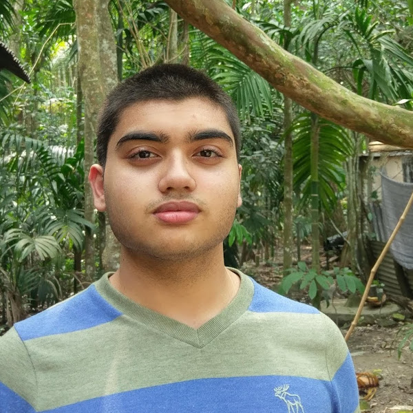

About Me

Hello! I'm Reehan Islam, a artist with a passion for creating expressive and imaginative artwork. My journey in art began as a hobby, but over time, it has grown into a deep love for capturing emotions through my work.
I specialize in pencil drawings and digital art, blending traditional techniques with modern tools to create unique pieces. My art is inspired by nature, pop culture, and the world around me, and I strive to bring a sense of wonder and creativity to every piece I create.
Through this gallery, I hope to share my work with the world and connect with fellow art enthusiasts. Thank you for visiting, and I hope you enjoy exploring my collection!